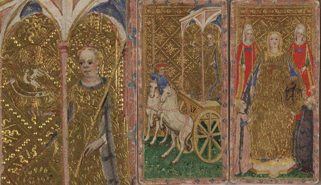
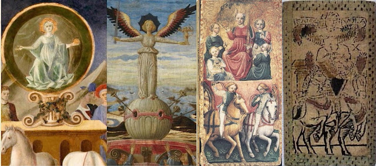
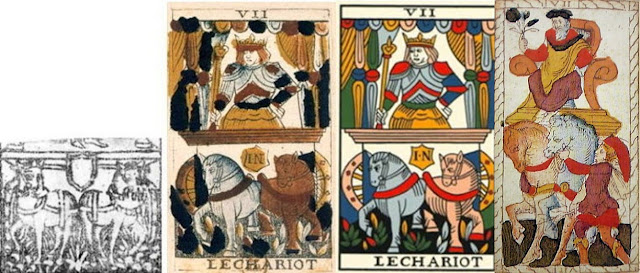
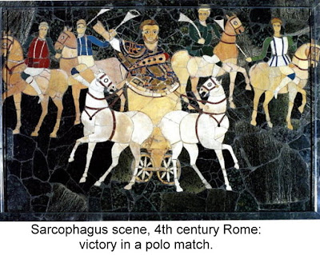
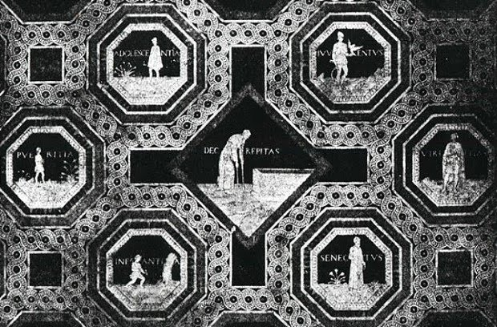
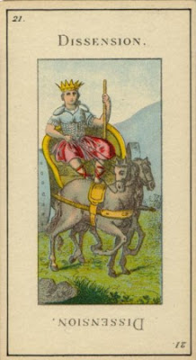
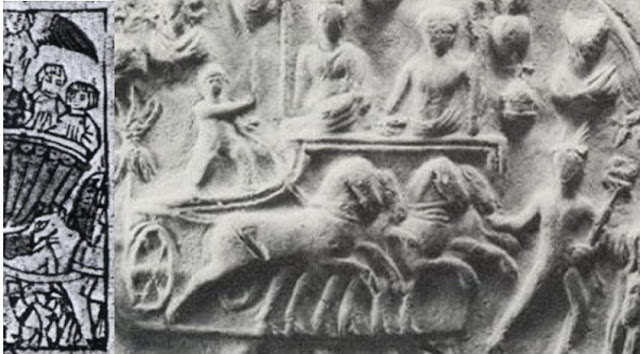

<!DOCTYPE html>
<!-- saved from url=(0076)http://tarotchristianbasis.blogspot.com/2016/11/chariot-currently-blank.html -->
<html class="v2" dir="ltr" lang="en">


<head>
<title>Tarot Triumphs: Chariot</title>
<link href="./historyoftarotfiles/tarothistory.css" rel="stylesheet" type="text/css">
 <link rel="icon" type="image/png" href="../archonphilosopherhomepagefiles/archon_philosopher_favicon.png">
<meta name="google" value="notranslate">


<style>

blockquote {
  display: block;
  margin-top: 2em;
  margin-bottom: 2em;
  margin-left: 40px;
  margin-right: 40px;
background-color: #FFF7F0;
padding: 44px;
font-style: italic;
border: 1px solid #000000;
text-align: center;
}

</style>
</head>


<body>
<div class="body-fauxcolumns">
<div class="fauxcolumn-outer body-fauxcolumn-outer">

<div class="cap-top">
<div class="cap-left"></div>
<div class="cap-right"></div>
</div>

<div class="fauxborder-left">
<div class="fauxborder-right"></div>
<div class="fauxcolumn-inner"></div>
</div>

</div>
</div>

<!--  shading above ++++++++++++++++++++++++++++++++ -->

<div class="content" style="border: 1px solid #F4A460;">
<div class="content-fauxcolumns" style="border: 2px solid #CD853F;">
<div class="fauxcolumn-outer content-fauxcolumn-outer" >
</div>
</div>


<div class="content-outer" style="border: 3px solid #B8860B;">
<div class="fauxborder-left content-fauxborder-left" style="border: 1px solid #FFE4B5;">
<div class="content-inner" style="border: 3px solid #B8860B;">

<header>
<div class="header-outer" style="border: 3px solid #F5DEB3;">
<div class="fauxborder-left header-fauxborder-left" style="border: 3px solid #A0522D;">
<div class="region-inner header-inner" style="border: 3px solid black;">
<div class="widget Header" data-version="1" id="Header1" style="border: 3px solid #A0522D;">
<div class="titlewrapper" style="border: 3px solid #F5DEB3;">
<h1 class="title">Tarot Triumphs</h1>
</div>
</div>
</div>
</div>
</div>
</header>


<div class="main-outer">
<div class="fauxborder-left main-fauxborder-left" style="border: 1px solid blue;">
<div class="region-inner main-inner" >
<div class="columns fauxcolumns">
<div class="columns-inner">
<div class="column-center-outer">
<div class="column-center-inner">
<div class="main section">
<div class="widget Blog">
<div class="blog-posts hfeed" style="border: 1px solid #BC8F8F;">


 <div class="date-outer">
        <h2 style="border: 1px solid blue;"><span style="text-align: right;">Sunday, November 6, 2016, Michael S. Howard</span></h2>
        
<div class="date-posts">        
<div class="post-outer">
<div class="post">


<a name="Chariot"></a>


<div class="post-header">
<div class="post-header-line-1" style="padding: 15px;"><h3 class="post-title entry-title" itemprop="name">Chariot</h3></div>
</div>


<div class="post-body entry-content">
<br>
<br>


<p>In the 14th century, before the trick-taking game known as the Tarot existed, Petrarch wrote his series of poems called I Trionfi, the Triumphs, in which each of six triumphal figures triumphed over the one before. In the 1440s, when the game very definitely existed, there was a fashion in Florence for people who could afford it to commission artists to illustrate these poems, and the form used was a series of allegorical figures on chariots, even though Petrarch himself had only imagined one such charioteer, namely Love, who stood on top of a rotating platform shooting his arrows at random.&nbsp;</p><p>Love, in Petrarch's series of poems, was vanquished by Pudicizia, or in some manuscripts Chastity. Pudicizia was a term of Roman origin meaning proper conduct in matters related to sexuality, the subduing of the wild instinct by rational self-control. His main model of Pudicizia was his beloved Laura, who had pledged herself to eternal chastity in the sense of sexual abstinence. But there were also other forms, such as chastity before marriage and after marriage devotion to home and family, which naturally included the engendering of children, and modest dress and comportment at all times. <br></p>Our earliest example of the Chariot card is probably the Cary-Yale (CY) card, in the middle above. which shows a lady on top and a man with the
 horses. From his dress, he is the same as the man in the Lovers card. 
It is hard to make out what she is carrying. In 2008 Jean-Michel David on Tarot
  History Forum identified the object that the lady on the chariot is holding as
  a jousting shield (below, center and left). (13) There is a thin red line that seems to be there as a guide to the artist. The
  shield held by the Empress (below right) is similar, but with more
  easily identifiable borders, because of the black lines. <br>


<p>In&nbsp; Petrarch's poem, the heroine is described as locked in combat with Love (lines 49-50) (14)<br>
</p><div style="text-align: left;">
<blockquote>
<span style="font-size: small;"><span>Never was there a fencer so adept </span><br>
<span>At turning blows aside. ... </span><br>
<span><br></span>
<span>(ché già mai schermidor non fu sì accorto </span><br>
<span>schifar colpo, né nocchier sì presto...) </span></span></blockquote><span style="font-size: small;">
<span>and so on. Of special interest are lines 118-119: </span><br>
</span><blockquote>
<span style="font-size: small;"><span>She wore, that day, a gown of white, and held </span><br></span>
<span style="font-size: small;"><span>The shield that brought Medusa to her death.</span><br></span>
<span style="font-size: small;"><span><br></span></span>
<span style="font-size: small;"><span>(Ell’ avea in dosso, il dì, candida gonna, </span><br></span>
<span style="font-size: small;"><span>lo scudo in man
che mal vide Medusa.)</span></span></blockquote><span style="font-size: small;">
<span>Instead of
Perseus’s mirror-shield, the lady on the card carries one with a Visconti
heraldic emblem: against Cupid; a blazing sun apparently will serve as well as the Medusa’s
reflected head. Besides the shield, there are also the white horses, the
  color of purity. What makes the shield particularly that of Pudicitia is the
  <i>psychomachia</i> tradition in which Petrarch wrote, the battle between
  virtues and vices, with virtues paired with their opposing vices.
  <i>Pudicitia</i> or <i>Castita</i> was paired with <i>Libido</i>, the kind of love
  associated with Cupid. (15) This is what is in the poem, and also in the placement of Cary-Yale Chariot
  card, situated between Love and Death. </span></span></div><span style="font-size: small;">
<span>
<br>The card also departs from Petrarch. There is no
bound Cupid to be seen, nor does the lady hold Petrarch’s “sacred leaves” (<i>sacre foglie</i>,
 line 186) of victory laid at Pudicitia's shrine. Petrarch didn't even have a 
chariot, much less a male groom minding the
horses. This groom resembles the man on the same deck's Love card, and the lady on top the woman on that card. So we may be seeing the triumphal entry of the prospective bride into her new city, led by her prospective husband</span></span>. In the time just before the known tarot, a notable example had been the entry 
into Milan of Marie of Savoy in 1428, where she became the husband of 
Filippo Visconti. This is typical for noble weddings. If so, there is no reason to suppose it is any one marriage procession in particular, even if, as some think, this deck was made to commemorate the marriage of Bianca Maria Visconti, Filippo's daughter by another woman, and Francesco Sforza, in which case they would be entering her dowry city of Cremona, where the wedding took place.<span style="font-size: small;"><span>(16) </span></span><p></p><p>We might notice that one of the horses, the one next to the groom, seems calm and docile, while the other one is agitated and perhaps a little wild. This contrast might be a reference to Plato's allegory of the charioteer, which had recently been published in Latin translation. In that allegory the charioteer of the soul has the job of managing two horses, one of which does not even need reins, but simply obeys his master's voice, while the oged horses 
that lead the chariot of the soul in Plato's <span style="font-style: italic;">Phaedrus,</span> a favorite text in the Renaissance. Here is how Plato describes the souls of gods and humans as charioteers:
</p><blockquote>
Now the winged horses and the charioteers of the gods are all of them
 noble and of noble descent, but those of other races are mixed: the 
human charioteer drives his in a pair; and one of them is noble and of 
noble breed, and the other is ignoble and of ignoble breed; and the 
driving of them of necessity gives a great deal of trouble to him... (1)</blockquote><p></p><p>particularly when they come to the sight of a beautiful living being, which the unruly horse, the more powerful, rushes toward as if to violate. It takes the combined effort of the calm, noble horse and the charioteer to control the other horse. On the card, the presence of the groom next to the calm horse might be to say that the prospective husband knows how to keep the horse of his desire under control.&nbsp; <br></p><p>
There is an outside chance that the deck wasn't made during the lifetime of Filippo Visconti, Duke of Milan, at all, but after his death upon the commission of Francesco Sforza. In that case it might, besides commemorating the marriage, also have suggested another event, the entry into Milan by Sforza, upon being recognized as Duke by the populace he had starved into submission. In that case it would be Francesco leading his wife, the daughter of Filippo Visconti, the former duke of Milan, into the city that was rightfully theirs as Filippo's heirs. Against this dating of the card people point to the Visconti "rearing horse" design on the horse. But Sforza would surely have used this same currency until he had time to coin his own, and in the meantime it shows the continuity of the regimes. In this interpretation the chariot would do double duty as a victory chariot, in the manner of the old Roman victory parades.<br></p><div class="separator" style="clear: both; text-align: center;">

</div>The next oldest card, seemingly done by the same Bembo workshop in Cremona, has a similar ambiguity. In this case the woman, a bit more mature looking than previously, holds a golden orb that is as large as a shield. There is no groom, and both horses seem to be following her lead. Somewhat surprisingly, they are winged. Again, this might be a reference to the <i>Phaedrus</i>, to a different part of the allegory, referring to the chariots of the gods, described as flying about on chariots with winged horses. In the myth, the human charioteer glimpses these chariots on the other side of a wall suspended in the air. And later he recalls one in particular, that of "true beauty, with her companion temperance." So this card would represent again the triumph of Pudicizia as one of the gods.<p></p><p></p><p>On the other hand, wings were an attribute of Fame, to carry the name of one who had accomplished noble deeds far and wide. In that case it might be to celebrate the fame of its rider. That had been the original purpose of chariots in parades; while they were of no use to the Romans in battle, they had a ceremonial function in the parades that followed victory. Aligned with that way of thinking are the Chariot cards of the Charles VI, Alessandro Sforza, Rosenwald, and Bolognese decks, all with male figures in what seems like a parade.</p><p>&nbsp;

</p>

<p>Besides these, however, there was still Fame herself as an allegorical figure, typically presented as a feminine figure in a horse-drawn chariot. Such a figure, over whom was a banner that said <span>"I am the Glory of the worldly folk" (</span><span>“Io son la Gloria del popol mondano”) </span>had been celebrated by Boccaccio in hi<span style="font-size: small;"><span style="font-size: small;">s Amorosa Visione: (Ch. VI, lines 54-63): (17)</span></span><br><span style="font-size: small;"><span style="font-size: small;"></span>
</span></p><blockquote>
<span style="font-size: small;"><span>...she sat on a triumphal chariot...</span></span><span style="font-size: small;"><span></span><br></span>
<span style="font-size: small;"><span>...she held in her hand a shining sword...</span><br></span>
<span style="font-size: small;"><span>...she held in her left hand </span><br></span>
<span style="font-size: small;"><span>a golden apple of astral splendor.</span><br></span>
<span style="font-size: small;"><span>Then immediately appeared four white steeds</span><br></span>
<span style="font-size: small;"><span>whiter than alpine snow, each of which urgently <br>
burns to draw the golden chariot.</span></span> ...<br></blockquote><span style="font-size: small;">
</span><blockquote class="tr_bq">
<span style="font-size: small;"><span>(...sovra triunfal carro si sedea,…<br>
…man tenea / una lucente spada…<br>
...e teneva nella man sinestra,<br>
un pomo d’or di splendor siderate.<br>
Vedeasi poi via piu che neve alpestra<br>
quattro bianchi destrier, che ciascun forte<br>
in trar l’aureo carro arde e s’addrestra....</span></span> </blockquote><p> These
 attributes, albeit with only two horses, appear on illustrations of Petrarch's "Triumph of Fame" poem (below, two left, by Pesellino and Scheggia) as 
well as on Chariot cards with Charioteers of either sex (above and third card from left below). As for the banner and its words, that was generally omitted. An exception is a minchiate example from the city of Lucca (far right below), which proclaims <i>fama vola,</i> "fame has wings" - meaning both that it travels far and wide and also that it is perhaps fleeting. In most minchiate decks, the lady had a banner but without words. Her nudity does not suggest the ideal of Pudicizia.</p><div class="separator" style="clear: both; text-align: center;">

</div>Above, the third card from the left, with a female Charioteer and attendants, is held in the French Museum of Playing Cards at Issy-Moulineux and is thought to be in the style of Ferrara. Besides the attributes of Fame, notice that the two horses are different colors, a difference that corresponds to Plato's account of the two horses in his Charioteer allegory. Plato has something to say about that later in his 
story:<p></p><blockquote>
The right-hand horse is upright and cleanly made: he has a lofty neck 
and an aquiline nose: his colour is white, and his eyes dark; he is a 
lover of honour and modesty and temperance, and the follower of true 
glory; he needs no touch of the whip, but is guided by word and 
admonition only. The other is a crooked lumbering animal, put together 
anyhow; he has a short thick neck; he is flat-faced and of a dark 
colour, with grey eyes and blood-red complexion; the mate of insolence 
and pride, shag-eared and deaf, hardly yielding to whip and spur.</blockquote><p>

This passage gives us an idea why reins are not needed. The first horse 
responds to the words of the charioteer. Yet Plato later describes how 
the other horse is so rebellious that he can be restrained only when the
 charioteer pulls on the reins so strongly that the bit brings blood to 
the horse's mouth. We do not see this in the Issy card: it portrays a later stage, when the rebellious horse has been suitably trained. Both horses have riders now, acting in harmony with each other and transmitting that harmony to their respective horses. <br></p><p>&nbsp;<span>A difficulty in separating Fama from Pudicizia in the context of Petrarch, is that Fame was also what he wanted for his chaste
Laura, from his verses and precisely for her Pudicitia. So when a lady is on
top of the chariot, it could be someone famed for Pudicitia, in other words about both.


It is said that Bianca Maria Visconti's favorite color was red. In that sense both the Issy and Visconti-Sforza cards could be celebrating that lady's Pudicizia, or in fact her virtue generally, if her four attendants are considered to represent the four cardinal virtues.&nbsp;</span><span>
</span><br>
</p>
<span>
</span>

<div style="text-align: left;">
<span>On other cards, where the charioteer is male or the female nude, the card has
shifted in meaning, no longer the triumph of sexual appropriateness but of the
quintessentially masculine virtue of victory in war, a virtue both more
celebrated and sometimes more ephemeral than victory in virtue. Yet Petrarch’s
Pudicizia lady was also a victorious warrior. And to have won his victories even a
male warrior must have to some extent triumphed over his instinct for food,
drink and sex, not only at the time of the battle but for the lengthy training
and preparation beforehand.</span><span style="font-size: small;"><br></span>
</div><p><b>The Chariot in France</b><br></p><p></p><p>In France, the card's rider was male, as in the Florentine and Bolognese cards, but also continued the differentiation between the two horses seen elsewhere. This differentiation is evident already in the "Cary Sheet", of around 1500, which is either from Lombardy, Lyon, or Avignon, and is a clear predecessor of the Tarot of Marseille's version. Although the sheet has not been colored, the differentiation is in the posture of the two horses: the bodies of the two horses diverge in opposite directions, yet the heads converge: one horse looks at the other, as though wanting to follow its lead. That is the situation when the unruly horse has been tamed: he learns to follow the lead of the horse that is following the words of the charioteer. <br></p><table align="center" cellpadding="0" cellspacing="0" class="tr-caption-container" style="margin-left: auto; margin-right: auto;"><tbody><tr><td style="text-align: center;"><a href="https://1.bp.blogspot.com/-PPiA78wWFTQ/YQZJG_QXaEI/AAAAAAAAQeI/RjAKUDOiVLgqHswoTl7qUBA6Yn1y3NXEQCLcBGAsYHQ/s1223/07ccarySheetNobFlorGeof.jpg" style="margin-left: auto; margin-right: auto;"></a></td></tr><tr><td class="tr-caption" style="text-align: center;"><br></td></tr></tbody></table>A later example is in the Catelin Geoffrey 
card of 1557 (above far right), which like the Cary-Yale has a groom holding
 the noble horse, while replacing the woman with an older man. The 
horses are again colored light and dark, as in the <span style="font-style: italic;">Phaedrus</span>
 allegory. That an old, dignified-looking man is on top suggests the three parts of the soul in Plato, with the ruling element as intellect, whose virtue is wisdom, the white horse as the noble part, whose virtue is fortitude, and the reddish horse the unruly appetitive part, whose virtue is temperance. With an old man on top, it leads into the next two cards of the Marseille order, Justice, which is the proper ordering of the three parts as determined by wisdom, and the Hermit, who represents Wisdom in its most contemplative aspect.<br><p></p><div style="text-align: left;">
Noblet, of around 1650, continues the body positions of the Cary Sheet, and puts the two 
horses on the same sides as in the Cary-Visconti. Plato says that the 
noble horse is on the "better" side, which would be the right, but of course it depends on from which perspective, inside or out. Noblet follows Catelin Geoffrey in making the horses 
different colors, reddish and whitish, although the contrast is more apparent in the Noblet original than in Flornoy's 
restoration. It is again the later stage, but without riders: the rebellious horse is 
restrained by the obedient one, rather than the charioteer himself. It 
is like when the citizens of a state rebel against its ruler; the ruler 
himself does not put down the rebellion, but relies on his soldiers to 
do it for him. The two horses are two powers in the soul, one moderate and obedient to the voice of reason, the other 
inclined to follow its own irrational desires.<br>
<br><div style="text-align: left;">

The unruly horse, in Plato's allegory, sees Beauty from afar and goes 
toward it, to satisfy its desire upon it without respect for its 
sacredness. Paradoxically, in so doing it also leads the chariot closer,
 so that the charioteer comes near to "true beauty, whom he beholds in company with Modesty like an image placed upon
 a holy pedestal." The term Modesty is a close approximation of the medieval Italian conception of Pudicizia, while the two together are reminiscent of the two women of the Lover card, not in opposition but in harmony. It is as when we see a 
beautiful Renaissance painting: it is our senses that are attracted at 
first, and then we want to understand better what is being said. In this
 way the reddish horse now represents Pleasure, and the whitish one 
Virtue.</div></div><p>What then of the charioteer himself? Plato says he is the part of the 
soul that stands high enough up so that once he could see absolute 
Goodness, Beauty, etc., but now only discerns them dimly when he sees 
their imperfect copies in the material world, whether beautiful bodies or beautiful souls, though a hazy recollection
 of his life before entering matter. He "sees through a glass dimly," 
the Jowett translation has it. The Greek is not so close to 
St. Paul's wording, although the sense is similar: he sees through 
darkened organs of perception. In the Conver version, he appears stupified, dazzled by the vision before him. While conveying this aspect well, it unfortunately has lost the traditional difference in coloring between the two horses. But even here it is clear that the horse on our right is watching the other closely. (2)<br></p><div>It will require the
 strongest and most alert effort of will, in our card represented by the
 charioteer and the noble horse, to give the unruly horse what it can restrain it from further action: a "holy 
fear," so that the noble horse's restraint is followed.<br>
<br>
All this is in accord with Christian Neoplatonism. Divine beauty is none
 other than God, whom we must not try to be at one with through 
excessive zeal but approach in holy fear as well as desire, with no care
 for life, possessions, or other considerations of ordinary prudence, 
but with a respect born of fear.<br>
<br>
The situation on the Chariot card can be expressed in the same terms 
used in one interpretation of the Lover card. One horse, Virtue, pulls 
one way, and the other, Pleasure, pulls the other, and our charioteer, 
looking at Virtue, looks anxious. Has he understood the situation 
properly? How do his commands measure up to the standards of the ideal 
ruler?<br>
<br>
In the "Marseille" model, the canopy is a leftover from the 
Cary-Visconti parade chariot. Yet here, it shelters a man in armor, 
riding at attention and wearing a ducal crown. Although the victory is 
his for the moment, winning the peace is another matter. Francesco's son
 Ludovico, for example, rode triumphantly into Milan in 1500, after 
being expelled by the French. Yet within months he was languishing in a 
French jail. To win the peace, one must curb the desire for honor as 
well as that for pleasure, as Francesco knew. The canopy, appropriate 
for a parade, makes the chariot too top-heavy for battle, and keeps the 
charioteer out of the light of reason. (4)<br>
<br>
Of relevance here is what Plato says about the charioteer traveling in the company of the god that suits him best. He observes,
<blockquote>
Now the lover who is taken to be the attendant of Zeus is better able to bear the winged god, and can endure a heavier burden; but the attendants and companions of Ares, when under the influence of love, if they fancy that they have been at all wronged, are ready to kill and put an end to themselves and their beloved...</blockquote>
The lover attending Zeus is the philosopher, as Plato says. In 
describing the attendant of Ares, he has in mind the wounded pride of 
the warrior, quick to react without thinking out the implications. 
However there is a mature side to the warrior, which Francesco Sforza 
exemplified. Willing to risk everything to get what he wanted, he also 
knew when to quit. (5)<br>

<br>
So there is an issue here that Plato did not explore. If the charioteer 
is exercising his rational faculties "dimly" or "darkly" (as 
translations have it) then he may communicate excessive honor to the 
noble horse, and the chariot is as much headed for trouble as if it were
 led by the other horse. It can lead the chariot into rash action, and 
also can draw it back in fear unnecessarily. The "Marseille" rider seems
 to be relying on his armor for protection--not a good sign. He stands 
stiffly in the upper part of the chariot, like a person operating from 
the upper part of his body.Perhaps he needs to get down some of the time and ride with the horses, 
so as to feel their own desires, of which while he is on top he may be 
unaware. Yet he also needs to continue to be the one in control, 
directing the chariot toward a goal that is ascertained by rational 
thought.<br>
<a href="http://3.bp.blogspot.com/_Lu-6PwakMv0/SDo69zPrtgI/AAAAAAAAA14/fLK1-Y6JwfY/s1600-h/07chariot4thcentRome.JPG" style="clear: right; float: right; margin-bottom: 1em; margin-left: 1em;"></a><br>
Some say that considering the way the wheels are pointing, against the 
direction of the horses, the chariot cannot move at all. However it may be
 that the artist is deliberately using an archaic style, one from before
 perspective was used. It is not that perspective techniques were too 
new: the Cary-Visconti's artist used perspective, in the depiction of 
the canopy. Likewise, in the Noblet, the King of Bastons card shows the 
use of simple perspective in the floor. Perhaps the artist of the 
Marseille style, from the Cary Sheet onwards, wanted to give the cards 
an antique look. A similar chariot appears on a 4th century sarcophagus,
 perfectly preserved in a Roman house. The deceased, a former polo 
player, rides in his triumphal chariot, and the design is pleasing 
despite its ridiculousness. At the same time, the analogy to the Phaedrus would suggest that the chariot is not in fact moving. "Fear of the lord" restrains all three elements of the soul from violating Beauty's sacred space. It is enough to gaze in wonder and recollecdtion.<br>
<p>One further change in going from Italy to France has to do with its number in the sequence. Whereas in the Italikan orders it is invariably eighth, in France it becomes seventh, changing places with Justice. The number 7 in the <span style="font-style: italic;">Theology of Arithmetic</span> is associated with the rational soul (p. 73). That is where the charioteer is in Plato's <span style="font-style: italic;">Phaedrus</span>,
 looking above him to the perfections he sees in heaven. If there were a
 Pythagorean creation myth, the seventh day would be for creating 
rational beings in the physical world, i.e. humanity. The <span style="font-style: italic;">Theology</span>
 divides life into distinct periods of seven hours,  days, months, and 
years, starting even before birth. At the end of each is a critical 
period, which must be surmounted to reach the next. Taking life as a 
whole, moreover, there were said to be seven main stages:<br>
</p><blockquote>
Seven are the seasons, which we call ages--child, boy, adolescent, 
youth, man, elder, old man. One is a child up to the shedding of teeth, 
until seven years; a boy up to puberty, until twice 7; an adolescent up 
to the growth of the beard, until three times 7; a youth during the 
general growth of the body, until four times 7; a man up to one short of
 fifty years, until seven times seven; an elder up to 56 years, until 
seven times 8; from then on one is an old man. (<span style="font-style: italic;">Theology of Arithmetic</span> p. 87f.)</blockquote><div class="separator" style="clear: both; text-align: center;">
</div><p>
These stages were famously pictured in the pavement of Siena Cathedral, 1470s. Unfortunately all I have is a black and white rendition. It is also from such considerations that the melancholy Jaques in Shakespeare's <span style="font-style: italic;">As You Like It</span>, 2.7.139ff utters his "all the world's a stage" speech:
</p><blockquote class="uncited">
<div>
JAQUES.                All the world's a stage,<br>
And all the men and women merely players,<br>
They have their exits and entrances,<br>
And one man in his time plays many parts,<br>
His acts being seven ages. At first the infant,<br>
Mewling and puking in the nurse's arms.<br>
Then, the whining schoolboy with his satchel<br>
And shining morning face, creeping like snail<br>
Unwillingly to school. And then the lover,<br>
Sighing like furnace, with a woeful ballad<br>
Made to his mistress' eyebrow. Then a soldier,<br>
Full of strange oaths, and bearded like the pard,<br>
Jealous in honour, sudden, and quick in quarrel,<br>
Seeking the bubble reputation<br>
Even in the cannon's mouth. And then the justice<br>
In fair round belly, with good capon lin'd,<br>
With eyes severe, and beard of formal cut,<br>
Full of wise saws, and modern instances,<br>
And so he plays his part. The sixth age shifts<br>
Into the lean and slipper'd pantaloon,<br>
With spectacles on nose, and pouch on side,<br>
His youthful hose well sav'd, a world too wide,<br>
For his shrunk shank, and his big manly voice,<br>
Turning again towards childish treble, pipes<br>
And whistles in his sound. Last scene of all,<br>
That ends this strange eventful history,<br>
Is second childishness and mere oblivion,<br>
Sans teeth, sans eyes, sans taste, sans everything.</div>
</blockquote>
The seven ages also correlate with the seven planets, from the Moon to Saturn, as is evident in Jaques' speech.<p>In the Christian Kabbalah, Reuchlin (p. 285) translated the name of the 7th sefira, <span style="font-style: italic;">Netzach</span>
 in Hebrew, as victory (Latin, Triumph); he associates it with the 
"prophet's vision" and with the prophet Moses (p. 291). Reuchlin's 
source, Gikatilla as translated into Latin by Ricci, called it "place of
 counsel and conferring with higher powers" (p. 75); triumph (Neza 
victoria p. 76); Eye of Mercy (oculum miseracordiae p. 76). Pico says 
that it is "that which converts to superior things" (11&gt;67). It is 
victory attained by looking to what is above one, reason or God. All of 
that is very much in keeping with the Chariot card in the tarot as it 
would have been understood at the time. (1)<br>
<span style="font-size: large;"><br><span style="font-weight: bold;"><span style="font-size: medium;">The cartomantic tradition in France</span><br></span></span></p><p>For de Gebelin, seeing the cards as Egyptian, of course the chariot was clear confirmation of his hypothesis, for who else but the pharoah, charging against Moses and the Hebrews, was more clearly associated with that vehicle? For him, however, the rider was not leading his army toward its doom, but rather represented "Osiris Triumphant...scepter in hand, Crown upon his head, he is in his war chariot, drawn by two white horses." He is also embodiment of the Sun, in springtime; "having been lost in the winter, he reappeared in springtime with fresh brilliance, having triumphed over all those who nade war against him."&nbsp;</p><p>His colleague de Mellet had a different opinion:&nbsp;</p><p></p><blockquote>Seventh, the War Chariot, in which is an armor-clad King, armed with a javelin, expresses the dissensions, the murders, the combats of the age of bronze &amp; the announces the crimes of the age of iron.</blockquote><p></p><p>

Etteilla, perhaps reflecting a cartomantic tradition, seems to have sided with de Mellet, who may have been doing the same. Etteilla's card has just one&nbsp; keyword, "Dissension," both upright and reversed. In the word-lists of his disciples there are two: "Dissension" and "Arrogance," a change 
that was put in visual form in later versions of his deck:<br>
</p><blockquote>
[Dissension.] DISSENSION—War, <span style="font-style: italic;">Dispute, Disruption,</span> Troubles, <span style="font-weight: bold;">Insurrection, Sedition, Faction, Rebellion, Defection,</span>
 Riots, Unrest, Battle, Fight, Combat.—Duel. Arrogance, Haughtiness, 
Vanity, False Glory, Pomp, Ostentation, Daring [Audacite: Audacity], 
Temerity.—Violence, Disorder, Anger, Injury, Abuse, Presumptuousness, 
Vengeance.<br>
<br>
Reversed: [Arrogance.] ARROGANCE. Unrest [bruit; Stockman has noise], 
Racket, Quarrel, Disagreement, Contesting, Lawsuit, Harassment, <span style="font-weight: bold;">Arguments, </span>Debates.</blockquote><p>
These words strongly suggest that for Etteilla, the Chariot card had the sense of  someone trying to dominate 
but losing control of the situation, like Phaeton, son of the sun-god Helios, who tried to guide the chariot of the sun without understanding the magnitude of the task. Of course the two horses point their heads in opposite directions, pulling the chariot this way and that, wreaking havoc as it goes. As characteristic of a person, such an attitude is perhaps not a 
one-time childish stunt like Phaeton's, but a way of life, always 
heading for a fall as a consequence of endemic arrogance. The French Revolution offers examples enough.<br></p><p>Eliphas Levi had no use for Etteilla. Levi designed his own version of the card, restoring de Gebelin's interpretation. The Charioteer is "a triumphant victor crowned with a circle upon which arise and radiate three golden pentagrams." After more symbolic geometry, he adds "his attitude is proud and tranquil." </p><p>Instead of the horses, Levi has two sphinxes:&nbsp;</p><p></p><blockquote>"one pulls in one direction and one in the other, but one of the two turns its head, and they look in the same direction. The sphinx which turns its head is black, the other is white.</blockquote>It is rather clear that he knows the meaning, even if he doesn't say in so many words what it is (again the <i>Phaedrus</i>, as already discussed). The sphinxes so far simply add an air of mystery and Egyptianism. Etteilla's card looked hardly like something out of ancient Egypt. Of course, in this thinking, Kabbalah is a Hebrew appropriation of the Egyptians: thus the two crescent moons on the charioteer's epaulettes represent the Gevurah and Gedullah of the Kabbalah. He is himself in balance between these two poles.&nbsp;<p></p><p>Paul Christian continued in Levi's footsteps, but apparently without his grounding in previous occultism. It is the veritable truimph of the will:</p><p></p><blockquote>Two sphinxes, one white, the other black, are harnessed to the 
chariot. The former symbolises Good, the latter Evil—the one conquered, 
the other vanquished—both having become the servants of the Magus who 
has triumphed over his ordeals.</blockquote><p></p><p>What does it mean to conquer good and vanquish evil? Is the magus then above both? In another place he says of the seventh step in initiation&nbsp; <i>the Chariot of Osiris</i>," that it "symbolizes <i>Victory</i>, that is to say the choice of Good, which is the fruit of truth and justice." But that is in another place, and here there is no mention of how the dark one looks toward the white. In all the cards with sphinxes that followed, in fact, they merely look straight ahead. It seems that for one at this stage of his initiation, there is nothing to fear but fear itself:</p><p></p><blockquote>Remember, son of the Earth, that the empire of the world belongs to 
those who possess a sovereign Mind, that is to say, the light which 
illuminates the mysteries of life. By overcoming your obstacles you will
 overthrow your enemies, and all your wishes shall be realised, if you 
go towards the future with courage reinforced by the consciousness of 
doing right. </blockquote><p></p><p>Christian claimed to have had the ear of Napoleon III himself in the heady days before the Franco-Prussian War. Earlier, Christian had correctly predicted both victory in the Crimean War and the birth of a son in the same year, and indicated in publishing some stories that he had read them to that son (Decker, Depaulis, and Dummett, A Wicked Pack of Cards, pp. 195-197). There is also a claim reported by the last authors cited, p. 202, which I have not been able to verify, that Christian's follower the Mage Edmund had been summoned to the palace to tell the anxious emperor of his future. If so, they failed him. Bismarck suggested in a famous telegram that the French ambassador had been sleighted by the Prussian king (see "the Ems telegram" on Wikipedia's site devoted to Napoleon III). On that provocation Napoleon III declared war In only a few weeks thousands of French lives would be lost as well as the important territory of Alsace-Lorraine; not only would the Emperor be out of a job but the stage would be set for renewed warfare in the next generation. The sovereign had not possessed a "sovereign Mind."<span style="font-size: medium;"><b>&nbsp;</b></span></p><p><span style="font-size: medium;"><b>&nbsp;<br></b></span></p><p><span style="font-size: medium;"><b>Waite and Case</b></span></p><p><br>Waite says of the card that it depicts the victorious hero who
</p><p></p><blockquote>&nbsp;has led captivity captive; he is conquest on all planes--in the mind,
 in science, in progress, in certain trials of initiation. He has thus 
replied to the sphinx, and it is on this account that I have accepted 
the variation of Éliphas Lévi;</blockquote><p></p><p>The "reply to the sphinx" would seem to refer to the Oedipus legend, in which the sphinx poses the hero a riddle, the answer to which is "man." The question, Waite tells us, " is concerned with a Mystery of Nature and not of the world of Grace, to which the charioteer could offer no answer." That is to say, perhaps, that it did not concern the world beyond this one, in which God's grace is that which transcends both good and evil. Moreover, the Charioteer's liberation is solely from externals, and not from "the bondage of the logical understanding." About the higher mysteries, represented by the scroll on the High Priestess's lap, he knows nothing, nor could he even open it, Waite says. His charioteer is somewhat lower than Plato's, whose logical understanding has, thanks to the irrational within him, at least glimpsed where reason alone cannot go. Plato's Charioteer may have realized that it was not his logic that led him there. Oedipus did not, until, in desparation, he used it only to find that he formerly had put too muc faith in it.<br></p><p style="text-align: left;">

Case has a different approach to the same image. Going back to Levi and Christian, he can say yes, it is about the triumph of the will. But what is will? He answers:</p><p></p><blockquote>Will is not something strong-minded people possess, while the timid are devoid of it. Will is the living, motivating power behind the entire universe.</blockquote><p></p><p>He cites Jesus: "I have no will save to do the will of him that sent me." Our task is to be receptive to the inner guidance of the only Willpower there is. </p><p>What then is the role of the individual personality? The personality is like a field that has been set aside for a particular purpose. Willpower is then like a seed in that field, which can thrive or languish depending on how the field is cultivated.&nbsp;</p><p>Case brings our attention to a passage in the ancient Hindu <i>Kathopanishad&nbsp;</i> that speaks of the soul as a chariot, in terms reminiscent of Plato. Case hypothesizes that Plato got it from Pythagoras, who learned it in his sojourn in India. Here is the teaching that Case quotes:<br></p><p></p><blockquote>"The Self is the rider in the chariot of 
the body, guided by the intellect as charioteer, drawn by the senses as powerful horses, 
controlled by the way of the mind serving for the 
reins. Thus runs the vehicle over the course of experience. The Self thus conditioned by 
the senses and the mind is called the Enjoyer
by those who know. One who is forsaken by the 
charioteer (intelligent discrimination) and 
has no idea of guiding the reins--his mind--in 
the proper manner, has no control ever the 
senses, and is like a driver of restive horses. He who has the intellect for his driver 
and the mind for proper reins, is able to 
reach the other end of the course, the highest 
essence of the All-pervading. THAT ever concealed in all, is never manifest, but is 
grasped by the sharp intellect of those who 
are trained to minute observation." </blockquote><p></p><p>The main difference between this allegory and Plato's seems to be that the soul, rather than being the whole unit of horses and charioteer, is in the other a passenger, who when the horses hold sway is not exercising his higher nature to guide the chariot by means of the mind - i.e. right discrimination = and not let it be guided by the horses, i.e. the senses.&nbsp;</p><div class="separator" style="clear: both; text-align: center;">


</div>There is actually one early 16th century Tarot Chariot card, or fragment of a card, in which the soul is in fact portrayed as a passenger, even as two passengers, male and female, while the chariot is guided by a child. By Roman times there may well have been a Hindu influence, but within a Platonic framework. I suspect that the child is meant to stand for Eros, the power of love, now directed toward the divine source, as Plato's charioteer becomes when he remembers his life in the heavens. From the similarity of this card to an Orphic medallion that has been preserved from Roman times, I suspect that the latter influenced the former. In the medallion, Mercury -i.e. intellect -&nbsp; leads the horses (on the card, we can make out a groom on the horse), while the child gives them the impetus to move. In the initiatory teachings of the Orphic/Dionysian cult, the aim was to become a Dionysus or Ariadne, awakening that dormant divine aspect of the personality within. After Death, with proper preparation, that aspect could ascend to higher levels. In the early 16th century, Duke Alfonso I of Ferrara is known to have had considerable interest in this aspect of Dionysus (see my blog "Dionysus in the Tarot," section A4, "Dionysus in Ferrara," at 


<a href="http://dionysisandtarot.blogspot.com/2012/04/a3-dionysus-in-leber-tarocchi.html">http://dionysisandtarot.blogspot.com/2012/04/a3-dionysus-in-leber-tarocchi.html</a>). &nbsp; <br><p></p><p>&nbsp;According to Case, the individual personality is in the position of the chariot, not the charioteer: "the personality is a vehicle of power, an instrument." The powers and energies of the previous six cards - focused attention, unconscious association, production mental images, ordering of images, intuition, and the awareness of interactions among them and with superconsciousness - enable this to happen (Case of course says much more, difficult to summarize). In that way the seventh card is at the end of one cycle among the cards, of which there will be two more.&nbsp; He concludes:<br></p><p></p><blockquote>By the invisible reins of the mind, we let 
the Self guide the vehicle of personality. 
The result is that the motive-power of sensation is brought to rest, as are the sphinxes 
in this version, or the horses which draw the 
chariot, in some older Tarot designs.&nbsp;</blockquote><p></p><p>In other words, the vehicle is at rest, the mind quiet, when the Self is in charge. As for why sphinxes and not horses, Case's answer is that "the sphinxes are the propounders of riddles, and so are the senses." Though the senses we experience the pairs of opposites: "what we like, what we dislike, what seems favorable to our aims and what is not." That they are of opposite colors conveys this opposition. On his card, there is no looking of one sphinx at the other. Both offer mere appearance. But when, by means of the intellect the Self controls this vehicle, the result is "security, safety and peace." </p></div><p><b>Jung and the Chariot</b></p><p>Jung did not, to be sure, comment on the card, but he had a dream or vision of a chariot that seems quite appropriate here. His <i>Black Book</i> gives it the date of December 18, 1913, a time of great inner turmoil for Jung. He writes about it in three places, each time a little differently. One is in the book <i>Analytical Psychology, Notes of the Seminar Given in 1925</i>, pp. 56-57. He introduces the dream by saying it is about Wagner's Siegfried, a character he never really liked.<br></p><p></p><blockquote>I was in the Alps, not alone but with another man, a curious shortish man with brown skin. Both of us carried rifles. It was just before dawn, when the stars were disappearing from the sky, and we were climbing up the mountain together. Suddenly we heard Siegfried's horn sound out from above, and I knew that it was he we were to shoot. The next minute he appeared high above us, lit up by a shaft of sunlight from the rising sun. He came plunging down the mountainside in a chariot made of bones. I thought to myself, "Only Siegfried could do that." Presently, around a bend in the trail, he came upon us, and we fired full into his breast. Then I was filled with horror and disgust at myself for the cowardice of what we had done. The little man with me went forward and I knew he was going to drive the knife into his heart, but that was just a little too much for me, and I fled.&nbsp; I had the idea of getting away as fast as I could to a place "they" could not find me. I had the choice of going down into the valley or further up the mountains by a faint trail. I chose the latter, and as I ran there broke upon me a perfect deluge of rain, Then I awoke with a sense of great relief.</blockquote><p></p><p></p><div class="separator" style="clear: both; text-align: center;">


</div>Jung comments that despite not liking Siegfried, nonetheless in this dream he was his hero, meaning the symbol of the greatest value recognized by us. He gave several examples:&nbsp; Jesus, Hercules. Jung felt that it was absolutely necessary to understand the dream, he had to kill himself he didn't. It was like a Sphinx for him. Or perhaps the plague that he had to find out how to lift.<p></p><p>Then it occurs to him (p. 57): <br></p><p></p><blockquote>I had killed my intellect, helped on to the deed by a personification of the collective unconscious, the little brown man with me. In other words, I deposed my superior function. The rain "is a symbol of the release of tension, the forces of the unconscious are loosed. ... The crime is expiated because, as soon as the main function is deposed, there is a chance for the other sides of the personality to be born into life.</blockquote><p></p><p>In the <i>Red Book</i> Jung started the chapter with a historiated initial "h" for "heldenmorden, hero-murder. In this version instead of a little brown man there was a <i>jungling</i>, youth, with him. Jung also included a watercolor of his dream-image. We see Siegfried rounding the bend, not on a chariot but carrying a large shield, as if to emphasize his defensiveness. He is also running away, not toward, the other figure, apparently just one, looking more like a wild animal than a person, with either two human heads or a blank space where they would be. Another striking thing is that neither figure dominates the scene, which is rather mostly mountains on all sides of a narrow valley. <br></p><p>Nonetheless, the dream specifies a chariot; we cannot eliminated it, but perhaps we are entitled to emphasize its structure as defense of the charioteer. If Siegfried represents his intellect, the chariot defines him as a victor in life, a success in the eyes of society, which for Jung was through the intellect. For someone else, it might be working with his hands, or making people comfortable, any of a thousand different strengths that different people have to offer society. It is what makes him part of society rather than someone's dependent, in a way that utilizes his natural skills and inclinations, risking failure in the process. It is the development of the independent ego, including its defenses against forces that might diffuse it. Then there is the recognition that he has developed one part of his personality at the expense of other parts to which he had not given attention. So is the sense that this part must cease to dominate. But domination was its whole reason for existence, that which carved out the person's identity. Hence it must be killed.<br></p><p>But what happens when the other parts are "born into life"? In M<i>emories, Dreams and Reflections</i> he took his analysis of the dream somewhat further. He says that these thoughts are what he was thinking at the time; if so, he certainly didn't articulate them in 1925.</p><p></p><blockquote>Suddenly the meaning of the dream dawned on me. “Why, that is the problem that is being played out in the world.” 
Siegfried, I thought, represents what the Germans want to achieve, 
heroically to impose their will, have their own way. “Where there is a 
will there is a way!” I had wanted to do the same. But now that was no 
longer possible. The dream showed that the attitude embodied by 
Siegfried, the hero, no longer suited me. Therefore it had to be killed.
<br><br>
After the deed I felt an overpowering compassion, as though I myself had
 been shot: a sign of my secret identity with Siegfried, as well as of 
the grief a man feels when he is forced to sacrifice his ideal and his 
conscious attitudes. This identity and my heroic idealism had to be 
abandoned, for there are higher things than the ego’s will, and to these
 one must bow.&nbsp;</blockquote><p></p><p>Jung rather notoriously was known for his temper and angry moods when contradicted, even as an old man. Germany was a late-comer among nations and felt a need to assert itself and carve its own empire among other empires, to emerge from the mire of medieval structures. But its conscious ideal was that it had the best way of organizing society and that this way should dominate, with Germans in charge. The result was to submerge other people and also other parts of itself, the "corrupted" parts. Even the desire to achieve certain ideals had to be abandoned, because they were the ideals of one part at the expense of other parts. It is the one-sidedness of the Christian ideal. Here his thoughts in the <i>Red Book</i>, apparently written during World War I but maybe with additions after, come into play.</p><p></p><blockquote><p>Oh that Siegfried blond and blue eyes, the German hero had to fall by my hand, the most loyal and courageous! He had everything in himself that I treasured as the greater and more beautiful; he was my power, my boldness, my pride. I would have gone under in the same battle, and so only assassination was left to me. If I wanted to go on living it could only be through trickery and cunning.</p><p>Judge not! Think of the blond savage of the German forests, who had to betray the hammer-brandishing thunder to the pale Near-Eastern God who was nailed to the wood like a cidken marten. The courageous were overcome by a certain contempt for themsevles. But their life force bad them to go on living, and they betrayed their beautiful wild Gods,their holy trees and their awe of the German forests.</p><p>What does Siegfried mean for the Germans! What does it tell us that the Germans suffer Siegfried's death! That is why I almost preferred to kill myself in order to spare him. But I wanted to go on living with a new God. (Reader's edition, p. 163)<br></p></blockquote><p></p><p>That the Germans suffer Siegfried's death suggests to me that this part was written after the war and its humiliating peace. The whole passage is of course very Nietzschian - not the Nietzsche that would be beloved of the Nazis, who wanted to go back to the blond "savage" armed with the new tools of German society, but of Zarathustra. In his note to this section Samdushani, editor of the "reader's edition, cites a passage in his essay "On the unconscious". <br></p><p></p><blockquote>Christianity split the Germanic barbarian into his upper and lower halves and enabled him, by expressing the dark side, to domesticate the bright half and fit it for culture. But the lower, darker half still awaits redemption and a second domestication. Until then, it will remain associated with vestiges of prehistory with the collective unconscious which must indicate a peculiar and increasing activation of the collective unconscious.(quoted in <i>Red Book</i>, reader's edition, p. 163, n. 122)<br></blockquote>Curiously, in relation to the famous Siegfried, Jung never mentions any desire for fame. Yet it may well be that he did fear he would lose his fame after the break with Freud. If so, it is well hidden. Also, looking at the <i>Red Book</i> and Jung's process of active imagination tgere, it does not appear that he really did kill off his intellect. It was very much engaged in the process, civilizing the unconscious while being revitalized by it. It was merely a matter of its recognizing that there was something higher, which the ego could only be conscious of indirectly, by its dialogue with other parts of the personality as equals in the conversation, including their further development, even if they would never be as accomplished as the superior part.<p></p><p>Jung's new God was the Self, the self-regulating whole, in which the ego is just one player, and not in control even of its own domain. Is it then a matter of redefining the charioteer as the Self, or of leaving the image altogether? The problem is that of ego-inflation, of thinking that the ego, once it attains a certain level, acts on behalf of the Self. The ego is not a passenger that can tell the Self, the Charioteer, to be in charge, because it is the ego that does things, not some higher entity, the Self. Moreover, the ego is not in charge, even of itself. Its lack of self-knowledge can be astounding. On the other hand, when the ego does things, it is not the Self acting through the ego. That is inflation. The image breaks down even as it tells us two sides of the story.</p>
<div style="clear: both;"></div>


</div>
</div>
</div>
</div>
</div>
</div>
</div>
</div>
</div>
</div>

<div style="clear: both"></div>


</body></html>